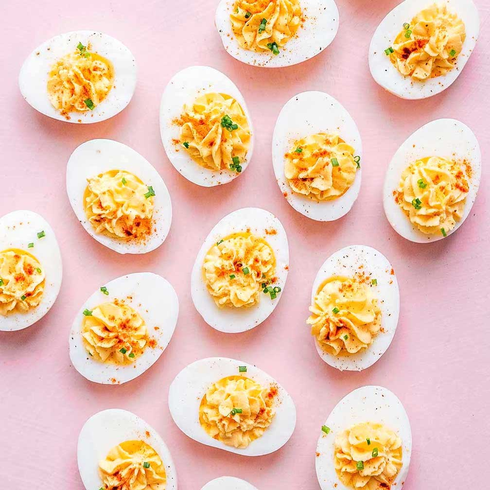

Deviled Eggs
Ingredients:
- 12 eggs
- ½ cup mayonnaise
- 1 tablespoon yellow mustard
- 1 tablespoon relish
- 1 teaspoon salt
- 1 teaspoon pepper
- paprika
- 1 tablespoon fresh parsley leaves
Instructions:
- Place the eggs in a pot and fill with cold water until the eggs are just covered. Bring the pot to a boil, then cover, remove from heat, and let sit for about 12 minutes.
- Transfer the eggs to a bowl of ice water for about 3 minutes, then peel them and cut them in half. Transfer the egg yolks to a bowl, and set the cooked egg whites aside.
- Mix the mayonnaise, mustard, relish, salt, and pepper with the yolks and transfer to a piping bag. (Alternatively, use a zip-top bag with a corner cut off.)
- Pipe the mixture into the egg whites, garnish with paprika and parsley, and serve chilled.
- Enjoy!
Vegetable Quiche

Ingredients:
- 1 ¼ cups all purpose flour, plus more for dusting
- ½ teaspoon kosher salt
- 1 stick unsalted butter, cubed and chilled
- 3 tablespoons ice water
- 1 teaspoon kosher salt, plus more for blanching
- 1 asparagu, woody ends trimmed
- 2 large egg yolks
- 3 large eggs
- 1 ½ cups heavy cream
- 4 oz goat cheese, divided
- ¼ teaspoon freshly ground black pepper
- 1 pinch McCormick® Ground Nutmeg
- 3 tablespoons fresh chives, divided, thinly sliced
Instructions:
- Add the flour and salt to a food processor. Pulse to combine. Add the butter and pulse 6–8 times until broken down into pea-sized pieces. Add the water and pulse 8–10 times, until the dough comes together. Turn the dough out onto a clean surface and shape into a disc. Tightly wrap in plastic wrap and refrigerate for 30–60 minutes
- Preheat the oven to 375°F (190°C).
- On a lightly floured surface, roll the dough out to a circle about ⅛-inch thick. Roll the dough onto the rolling pin and gently transfer to an 8-inch pie dish. Press the dough flush against the dish. Trim any excess dough around the edges. Fold the edges of dough back underneath itself, then crimp using an index finger knuckle on one hand and the thumb and index finger on the other hand.
- Line the crust with parchment paper and fill with pie weights or dried beans. Bake for 10–15 minutes, until the crust is beginning to brown around the edges. Remove the crust from the oven and carefully lift out the parchment paper and baking beans.
- Prick the bottom of the crust with a fork and return to the oven for another 3–5 minutes, until the bottom is beginning to brown. Remove from the oven and set on a rack to cool while you make the filling.
- Fill a large, high-walled skillet with water and bring to a simmer over medium-high heat. Once simmering, season the water generously with salt. Prepare an ice bath in a large bowl and set nearby.
- Blanch the asparagus in the simmering water for 30–60 seconds, until bright green and tender. Transfer to the ice bath to cool for 1–2 minutes, then drain and let dry on a paper towel or kitchen towel-lined baking sheet.
- Reserve 8–10 spears of asparagus. Cut the rest into 1-inch pieces.
- In a large bowl, whisk together the egg yolks, eggs, heavy cream, black pepper, salt, and nutmeg. Add the asparagus pieces and 2 tablespoons of chives and whisk to incorporate.
- Spread 3 ounces of the goat cheese across the bottom.
- Pour the filling into the crust. Arrange the reserved asparagus spears on top. Sprinkle with the remaining tablespoon of chives and dot with the remaining ounce of goat cheese.
- Bake the quiche for 28–35 minutes, until the center is set, but still jiggles slightly when gently shaken.
- Transfer the quiche to a wire rack to cool for 30 minutes before slicing and serving.
- Enjoy!
Strawberry Macarons

Ingredients:
- 3 egg whites, room temperature
- ¼ cup granulated sugar
- 1 ¾ cups powdered sugar
- 1 cup superfine almond flour
- 3 drops red food coloring
- 8 oz cream cheese, softened
- 1 cup powdered sugar
- 2 tablespoons milk
- strawberry jam
Instructions:
- In a medium bowl, beat the egg whites until frothy. Keep beating and slowly add the sugar until stiff peaks form.
- Sift the powdered sugar and almond flour over the egg whites. Fold the dry mixture into the egg whites, giving the bowl a quarter turn every third fold. Once the batter reaches a lava-like consistency, transfer half to another bowl and add the food coloring. Mix until just combined. Do not overmix!
- Working quickly, put the white and pink batters into separate small zip-top bags. Cut a corner off of each bag and squeeze the 2 batters evenly into a larger gallon-size bag or piping bag to create a multicolor effect.
- Line a baking sheet with parchment paper. (Tip: use a little batter to “glue” down the edges of the parchment paper so it stays put). In a circular motion, pipe 1½-inch (4-cm) dollops onto the baking sheet. Lift the baking sheet and gently tap on the counter to settle the batter. Let the cookies rest for 1 hour, until they are no longer wet to the touch and a skin forms on top.
- Preheat the oven to 285ºF (140ºC).
- Make the filling by mixing the cream cheese, powdered sugar, and milk in a medium bowl until smooth. Transfer to a piping bag and set aside until ready to fill the cookies.
- When the cookies are dry to the touch, bake for 13-15 minutes, until they have risen. Let them cool for 10 minutes. To fill, pipe a circle of the cream cheese mixture around the edge of 1 cookie and place a small dollop of jam in the center. Sandwich with another cookie. Macarons are best kept refrigerated until serving.
- Enjoy!